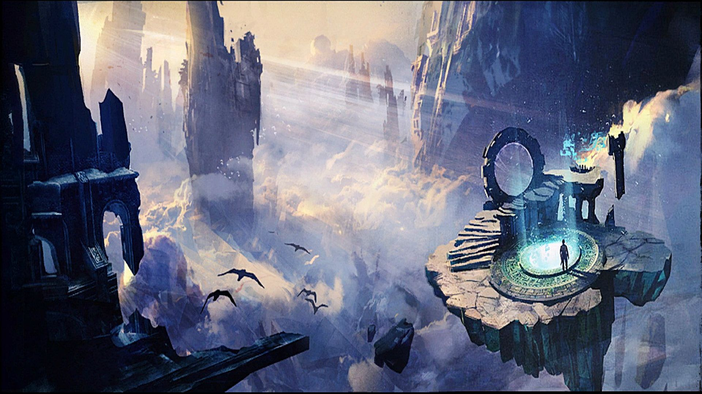

Archiwum | Newsy
Archiwum Newsów
| 27.03.2018 | Super Adventure Box 2018 |
Po raz kolejny (jak co roku w kwietniu) będziemy mieli okazję wkroczyć w wirtualną rzeczywistość wykreowaną przez Moto - asuriańskiego wynalazcę, którego największym osiągnięciem jest Super Adventure Box. Oprócz standardowego trybu "Normal" do dyspozycji mamy tryb "Infantile", dzięki któremu do większości miejsc dotrzemy w bardzo przyjaznej atmosferze tęcz i wesołych chmurek. Amatorzy wyzwań mogą cieszyć się ultratrudnym trybem "Tribulation", w którym na każdym kroku czycha śmiertelne niebezpieczeństwo. |
| 27.02.2018 | A Bug in the System |
6 marca 2018, przyjdzie zmierzyć nam się z nowym, drugim epizodem Living World Sezonu 4, zatyułowanym "A Bug in the System,". W planowanym contencie znajdziemy między innymi nowy mastery track, nową mapkę, nową legendarną broń (dagger), oraz oczywiście kontynuację story. |
| 06.02.2018 | Lunar New Year 2018 |
W związku z rozpoczęciem nowego roku w Chinach (tym razem jest to rok psa) w grze czeka na nas po raz kolejny cykliczny event – Lunar New Year. Zabawa zaczęła się 6 lutego i potrwa do 22 lutego. Ponownie powraca Dragin Bash Arena, Lucky Envelopes, oraz zmieniony wystrój Divinity Reach.Nowością jest race po całym mieście z wykorzystaniem mountów – Ci, którzy nie kupili dodatku nie będą jednak poszkodowani. Gra oferuje bowiem możliwośc wypożyczenia mounta na czas zabawy za niewielką opłatą. |
| 20.01.2018 | Fractale - rozpiska |
Kompletne rozpisanie fractali od poziomu 1 do 100. Z tego poradnika dowiesz się:
|